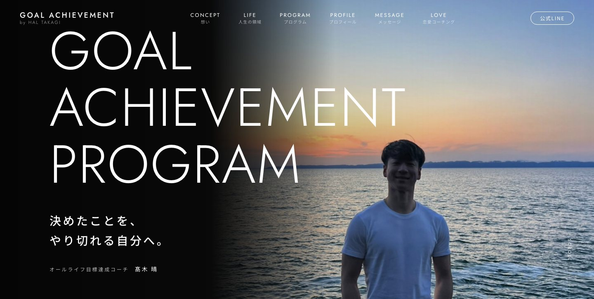
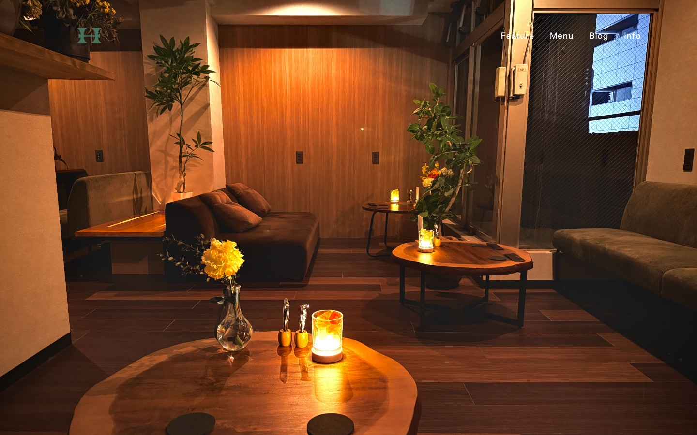
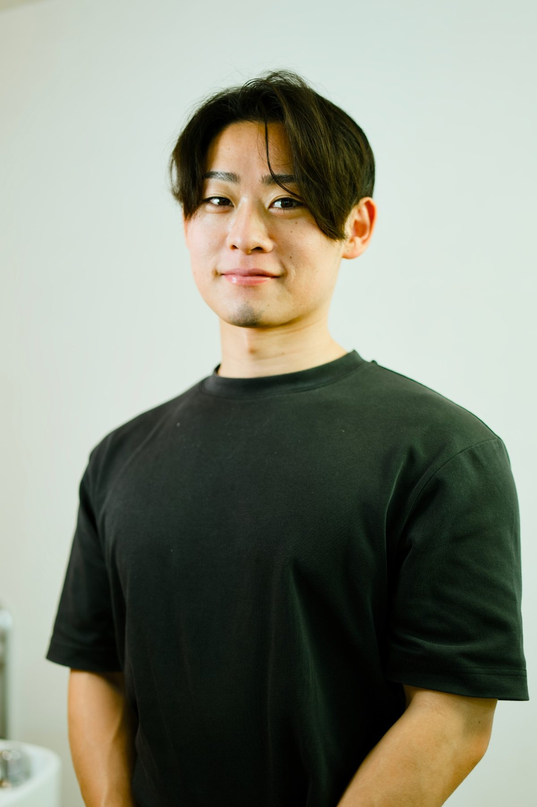

聞く
うまく言えなくて、 大丈夫です。
副業でコーチをしていて、年間でおよそ250人と話します。そこで知ったのは、自分のことをいちばん言葉にしにくいのは、本人だということでした。
だから最初は、ホームページの話をあまりしません。お店や仕事を始めたきっかけ、よく来てくれるお客さんのこと、ちょっと困っていること。雑談のような時間の中に、ページに載せたい言葉はだいたい埋まっています。
めぐるHP制作
柳沢恵瑠 Meguru Yanagisawa
ホームページをつくる仕事をしています。 といっても、最初の時間のほとんどは、 話を聞いています。
どんな人に来てほしいのか。これまで何を大事にしてきたのか。
言葉になる前のところまで聞けたら、つくるのはそのあとです。
聞く
副業でコーチをしていて、年間でおよそ250人と話します。そこで知ったのは、自分のことをいちばん言葉にしにくいのは、本人だということでした。
だから最初は、ホームページの話をあまりしません。お店や仕事を始めたきっかけ、よく来てくれるお客さんのこと、ちょっと困っていること。雑談のような時間の中に、ページに載せたい言葉はだいたい埋まっています。
つくる
制作の途中にAIを組み込んでいるので、ヒアリングから公開まで、早ければ1週間ほどです。そのぶん、話を聞く時間と、見た目を整える時間は削らないようにしています。
デザインは一緒に画面を見ながら、納得いくまで直します。ドメインや公開の手続きも、こちらでまとめて引き受けます。このサイトも、自分でつくりました。
きれいに見えることより、 その人らしさが伝わること。
つなぐ
ホームページは、見てもらって終わりではないと思っています。せっかく気になってくれた人との出会いが、一度きりで終わってしまうのはもったいない。
だから私は、ホームページをつくったあと、LINEの構築までひと続きで引き受けています。
LINE
LINEで自動の返信やステップ配信、予約の案内をしようとすると、Lステップやエルメのような有料のツールを使うのが一般的です。とても便利な一方で、月々の料金はずっとかかり続けます。
私は、オープンソースのLINE Harness（LINEハーネス）を使って、同じような仕組みをつくります。友だちの管理、シナリオ配信、タグ付け、リッチメニューの切り替え。必要なものはそろっていて、ツールの月額はかかりません。
アカウントの開設から、配信の設計、構築、実際に動かしてみての調整まで。途中で誰かに引き継ぐことなく、私が最後まで伴走します。
Lステップエルメ月額のツール代
LINE Harnessツール代
0円
※ LINE公式アカウントそのものの月額プランは、送るメッセージの数によって別にかかることがあります。
回数で区切ることはしません。言葉のひとつ、ボタンの色ひとつでも、気になるところがあれば言ってください。
使いはじめてから「ここ、こうしたいな」が出てくることも、たくさんあります。そのたびに、一緒に直していきます。あなたのお店や仕事に、ちゃんと役立つものになるまで。
見つづける
公開したあとは、GA4で数字を見ます。どこから来て、どのページで読むのをやめているのか。それを見ながら、言葉や順番を少しずつ直していきます。
数字の見方もお伝えするので、ご自身でも様子がわかるようになります。
画像を押すと、実際のサイトが開きます。



柳沢恵瑠 Meguru Yanagisawa
はじめまして、柳沢恵瑠（やなぎさわ めぐる）です。
消防士として3年半、現場にいました。そのあと完全歩合の営業、SNSマーケティングの会社での運用と法人営業を経て、いまはAIの導入支援と、ホームページの制作をしています。
遠回りに見えるかもしれません。でも、人の話を聞くこと、相手の立場で伝えること、仕組みで手間を減らすこと。どれも、いまの仕事でいちばん役に立っています。
何をつくるか決まっていなくても、かまいません。「うちにホームページって要るのかな」くらいの話から、一緒に考えます。
メールは、70044yanagisawa@gmail.com まで。